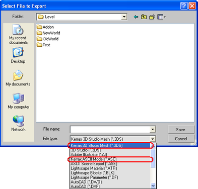

1. After installation you will have two different variants of the "KrxImpExp" plugins. The first variant is a set of normal import and export plugins for 3ds max which were written in C++ with the "3ds max SDK" library. These plugins can be started with items "File->Import" and "File->Export" of the main menu. The second variant is a set of scripts in the MAXScript language. These scripts can be started from a new window named "KrxImpExp" in the "Utilities" panel. The first variant works faster (C++ is faster than MAXScript), and the second variant gives you freedom of choice.
2. Select proper file types in the file import and file export dialogs. There are two supported file types: "Kerrax 3D Studio Meshes (*.3DS)" and "Kerrax ASCII Models (*.ASC)".
